Guia ilustrado de uso do app, aba por aba. Atualizado até v30 (14/08/2026). Não é preciso conhecimento técnico para ler este manual.
O Livro de Gastos é um app de controle de gastos pessoais que roda inteiramente no seu navegador. Todos os dados ficam guardados só neste aparelho (no armazenamento local do navegador); nada é enviado para nenhum servidor. A única forma de levar seus dados para outro aparelho é pelo backup manual, explicado na seção Cadastros.
Ao abrir o app pela primeira vez, ele oferece um assistente para cadastrar sua primeira conta corrente e seu primeiro cartão. Você também pode pular esse passo e cadastrar depois, na aba Cadastros. Se você já usava uma versão anterior do app, é possível importar um backup dela no botão Ferramentas, no alto da tela.
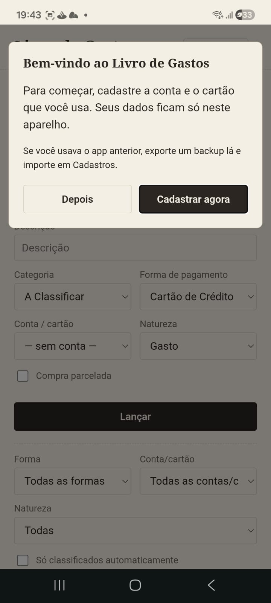
É a tela de uso diário: aqui você registra cada gasto, receita, transferência ou pagamento de fatura.
Só lançamentos do tipo Despesa (e que não sejam uma previsão de parcela futura) entram nas somas de gastos mostradas no Dashboard. Isso evita contar o mesmo dinheiro duas vezes — por exemplo, uma compra no cartão e o pagamento da fatura dela não são somados juntos.
Filtros: no topo da lista você pode filtrar por mês, forma de pagamento e conta/cartão, além de mostrar só os lançamentos classificados automaticamente pela memória do app (explicada na aba Conciliação).
Editar e excluir: cada linha da lista tem botões para editar (✎) ou remover (✕) o lançamento.
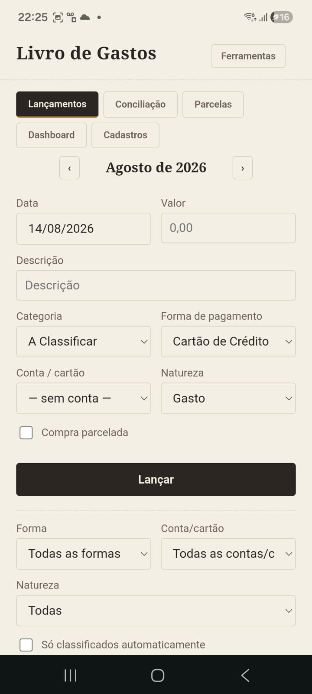
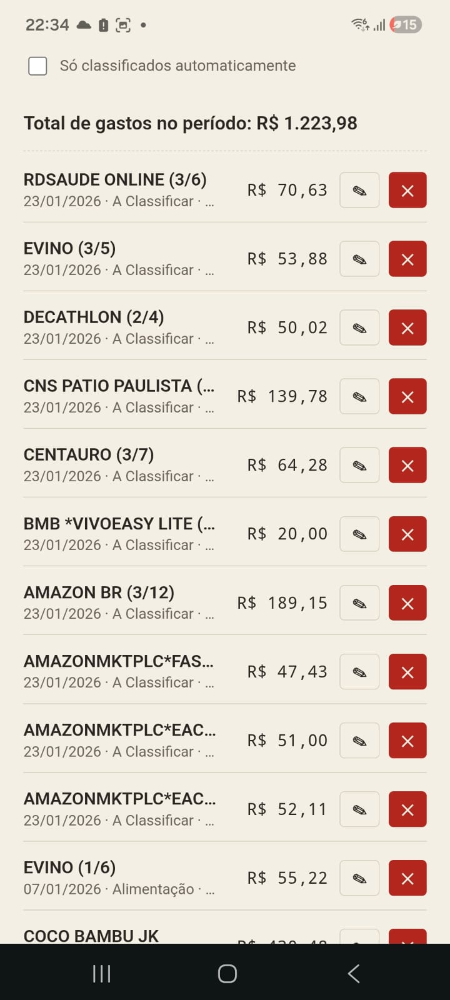
É onde você importa documentos (fatura de cartão em PDF, extrato bancário) e confere se cada linha do documento já tem um lançamento correspondente no app, ou lança as que faltam.
Depois de importar, o app organiza os itens em grupos ("baldes"):
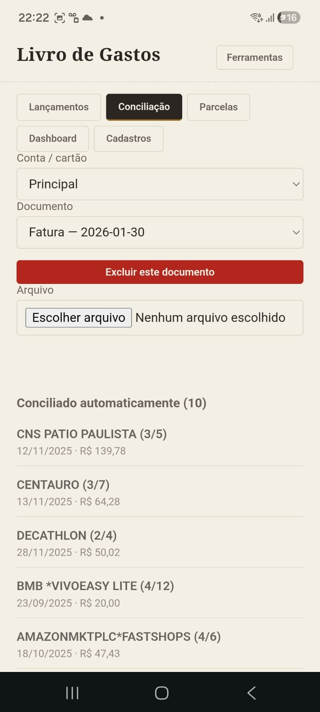
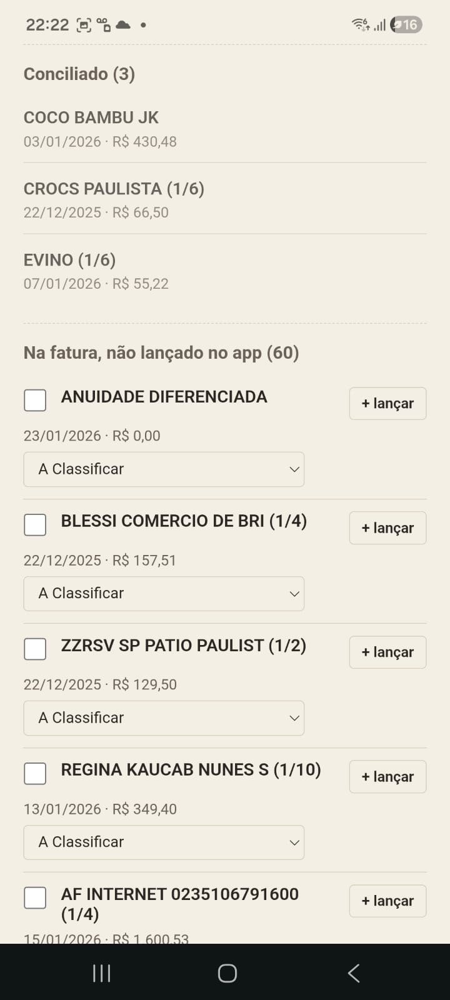
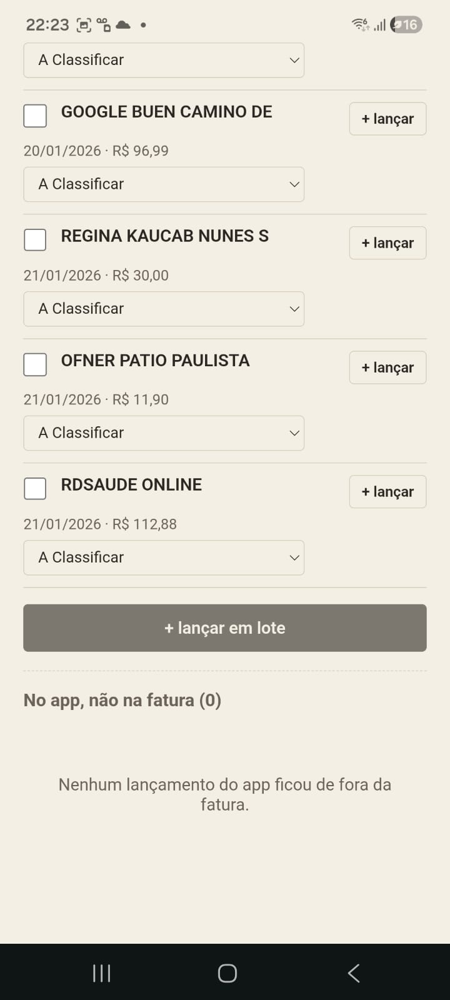
Memória de classificação: quando você corrige a categoria (ou a forma de pagamento) de um item vindo de um documento importado, o app memoriza essa escolha. Da próxima vez que uma descrição parecida aparecer, ele já sugere (ou aplica) a mesma categoria automaticamente. Essas regras podem ser revisadas na aba Cadastros, seção Regras.
Pagamento de fatura: o débito do pagamento da fatura, visto no extrato da conta, e a linha de crédito correspondente na fatura seguinte do cartão são o mesmo evento financeiro. O app reconhece isso e cria apenas um único lançamento para o pagamento, não importa qual dos dois documentos você importar primeiro.
Exportar conciliação completa: disponível no botão Ferramentas (grupo "Exportar para planilha"), gera uma planilha .xlsx com o status de conciliação de TODOS os lançamentos e documentos importados, faturas e extratos juntos — cada linha mostra se foi conciliada, se só aparece no documento, ou só no app, com a categoria já resolvida por nome. Útil para conferir tudo de uma vez fora do app.
Uma vitrine somente de consulta (não é possível editar nada aqui) que mostra:
Serve para você ter uma visão rápida do compromisso futuro assumido no cartão de crédito.
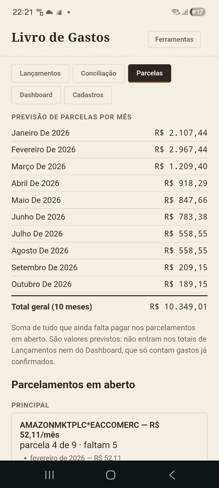
O painel de gastos. Mostra:
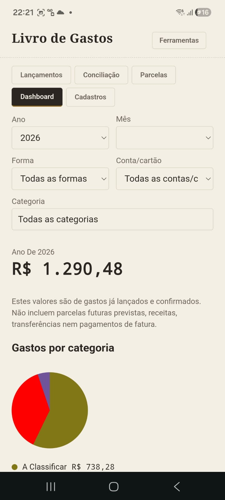
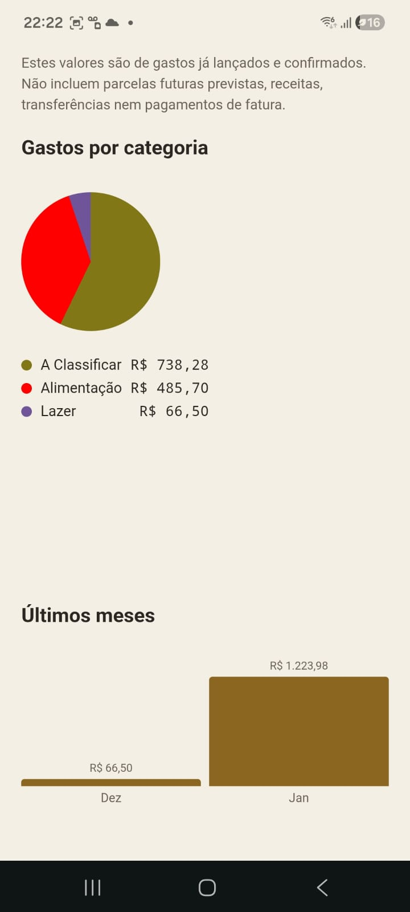
Filtros disponíveis: ano, mês, forma de pagamento, conta/cartão e categoria. Eles se combinam — por exemplo, é possível ver só os gastos de um cartão específico em um mês específico.
Reúne tudo que configura o app. Está dividida em seções:
Cadastre suas contas correntes e cartões de crédito. Um cartão pode ser marcado como "adicional" de outro (o cartão titular) — útil quando a fatura de um cartão titular também traz os gastos de um cartão adicional vinculado à mesma fatura. Contas e cartões não usados em nenhum lançamento podem ser excluídos; os que já têm histórico só podem ser desativados (ficam fora dos formulários de novos lançamentos, mas o histórico continua intacto).
Cadastre e organize as formas que você usa (cartão de crédito, débito, Pix, dinheiro, boleto, etc.). Cada forma tem um "tipo" que define, por exemplo, se ela concilia com fatura, com extrato, ou com nenhum dos dois. O campo "Conta padrão" preenche sozinho a conta/cartão ao lançar com essa forma — para formas do tipo Crédito, o combo mostra seus cartões; para as demais, suas contas bancárias.
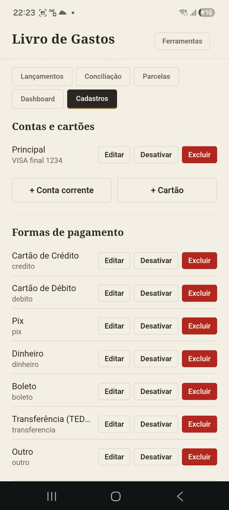
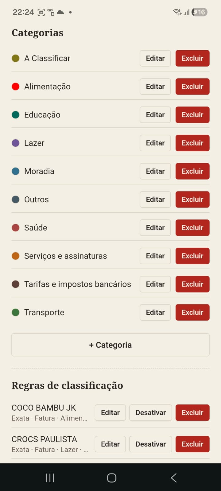
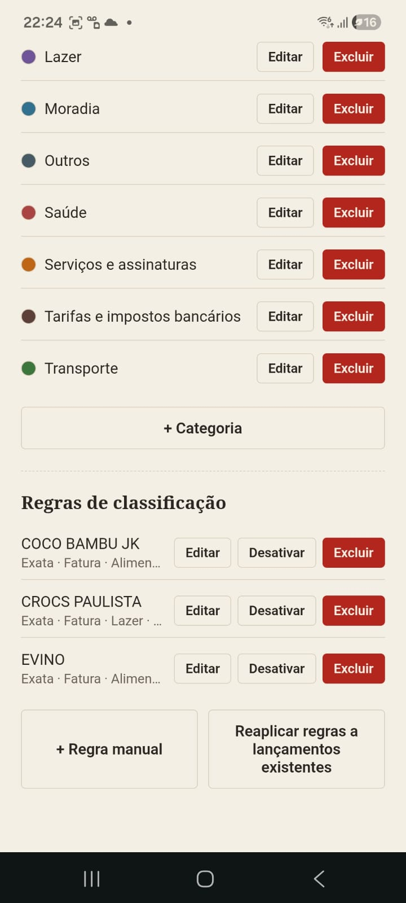
As categorias de gasto usadas nos lançamentos e no Dashboard. A categoria "A Classificar" é fixa e não pode ser excluída — é o destino padrão de tudo que ainda não foi categorizado.
Lista as regras aprendidas (ou criadas manualmente) pela memória de classificação. Você pode editar, desativar ou excluir cada uma, ou reaplicá-las de uma vez aos lançamentos existentes.
Fica no alto da tela, ao lado do nome do app, e está disponível de qualquer aba. Reúne tudo que não é do uso diário:
Exporta todos os seus dados para um arquivo .xlsx, que serve tanto como cópia de segurança quanto como forma de levar seus dados para outro aparelho ou navegador (importando o mesmo arquivo lá). Também é aqui que se importa um backup vindo de uma versão anterior do app.
Gera a conciliação completa em .xlsx (todos os documentos de todas as contas) ou o log de auditoria em .json. Nenhum dos dois altera seus dados.
Baixa planilhas prontas para você preencher fora do app — uma para fatura, uma para extrato e uma para lançamentos. Cada arquivo já vem com os títulos das colunas na ordem certa, duas linhas de exemplo (apague antes de importar) e uma aba "Instruções" explicando o formato de cada campo. Depois de preencher:
Antes de gravar, o app sempre mostra um resumo do que vai importar. Se alguma linha da planilha tiver a mesma data e o mesmo valor de algo já lançado, ela aparece destacada como possível duplicata — útil quando você importa o mesmo arquivo duas vezes sem querer, ou dois arquivos com meses que se sobrepõem. Aí você escolhe: cancelar, importar tudo mesmo assim, ou importar só as que são novas. Quando a descrição também for diferente, o app marca "(descrição diferente — confira)", porque pode ser só coincidência — dois cafés de R$ 5,00 no mesmo dia são gastos diferentes de verdade.
O botão Diagnóstico mostra informações técnicas dos documentos importados, útil se for preciso investigar algum problema.
No rodapé do menu aparece a versão atual do app. Se algo parecer não estar funcionando como o esperado logo após uma atualização, feche e reabra o app (ou force a atualização da página) e confira se a versão mudou.
Meus dados estão seguros se eu limpar os dados do navegador?
Não — os dados ficam só no armazenamento local do navegador. Faça backups periódicos pelo botão Ferramentas → Backup.
Por que um lançamento não aparece no total do Dashboard?
Só despesas efetivamente realizadas (não previsões de parcela futura) contam como gasto. Receitas, transferências entre suas contas e pagamentos de fatura aparecem na lista de lançamentos, mas nunca somam como gasto — isso evita contar o mesmo dinheiro duas vezes.
O app funciona sem internet?
Sim, depois de aberto uma vez, o app funciona offline (é instalável como aplicativo no celular ou computador).